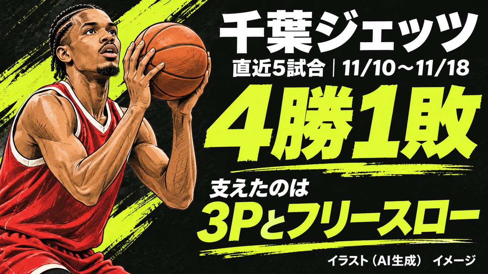

千葉ジェッツの直近5試合 4勝1敗を支えたのは3Pとフリースロー

千葉ジェッツは、直近5試合を4勝1敗で終えました。B.PREMIER全26チームの直近5試合と比べて、勝因をスタッツで整理します。
結論から書くと、2Pでは相手に28点上回られています。それでも3Pとフリースローで合わせて48点多く取り、5試合の得失点差はプラス20点でした。
直近5試合の試合結果
対象は11月10日の大阪戦から、11月18日の秋田戦までの5試合です。
| 日付 | 相手 | 会場 | スコア | 結果 |
|---|---|---|---|---|
| 11/10 | 大阪 | ホーム | 106-94（延長） | 勝ち |
| 11/12 | 滋賀 | アウェー | 90-87 | 勝ち |
| 11/14 | 長崎 | ホーム | 86-80 | 勝ち |
| 11/16 | 三遠 | ホーム | 104-110（延長） | 負け |
| 11/18 | 秋田 | ホーム | 89-84 | 勝ち |
順位は26チームそれぞれの直近5試合で比べたものです。相手の強さや日程の違いは調整していません。攻撃回数は、シュートやターンオーバーなどから数えた、両チームの平均です。
5試合の合計は475点を取って、455点を失いました。シーズン成績は10勝10敗です。
1試合の攻撃回数は26チームで最多
千葉Jの1試合の攻撃回数は82.0回で、26チーム中1位です。26チーム平均は75.5回なので、6.5回多く攻めています。
その結果、1試合の平均得点は95.0点で2位です。平均失点も91.0点で、少ない方から数えると21位になります。
| 項目 | 千葉J | 26チーム平均 | 順位 |
|---|---|---|---|
| 1試合の攻撃回数 | 82.0 | 75.5 | 1位 |
| 1試合の平均得点 | 95.0 | 85.6 | 2位 |
| 1試合の平均失点 | 91.0 | 85.8 | 21位 |
| 100回あたりの得点 | 115.8 | 113.5 | 11位 |
| 100回あたりの失点 | 110.9 | 113.6 | 10位 |
| 100回あたりの差し引き | 4.9 | -0.2 | 10位 |
得点も失点も多く見えるのは、攻撃回数が多いからです。100回あたりにならすと、得点も失点も上位に入ります。
平均得点の2位は、攻撃のうまさというより試合のテンポの速さによるところが大きいです。
2Pで負けて、3Pとフリースローで勝つ
5試合の得点を、シュートの種類ごとに分けました。
| 種類 | 千葉J | 相手 | 差 |
|---|---|---|---|
| 2P | 202点 | 230点 | -28点 |
| 3P | 189点 | 165点 | 24点 |
| フリースロー | 84点 | 60点 | 24点 |
| 合計 | 475点 | 455点 | 20点 |
千葉Jの2Pは184本中101本です。
相手は196本中115本でした。相手に2Pを決められた分を、残りの2つで取り返した形です。
3Pは打つ割合が3位、成功率は23位
千葉Jは、シュート全体の52.3%が3Pです。26チーム中3位で、平均は44.7%です。
一方で3Pの成功率は31.2%で、23位にとどまります。平均は34.3%です。
| 5試合の3P | 試投 | 成功 |
|---|---|---|
| 千葉J | 202本 | 63本 |
| 相手 | 172本 | 55本 |
成功率は高くありません。
ただ相手より30本多く打ち、8本多く決めました。相手の3P成功率は32.0%で、少ない方から10番目です。
フリースローは「もらう」「与えない」の両面で上位
千葉Jの1試合のフリースロー試投は22.4本で、26チーム中7位です。平均は19.5本です。
相手に与えた試投は16.8本で、少ない方から6番目です。
5試合では112本打って84本決めました。成功率は75.0%で8位です。
相手は84本のうち60本の成功です。ここで24点の差がつきました。
ボールを失わず、リバウンドも強い
ターンオーバーで終わった攻撃の割合は11.9%です。少ない方から7番目で、平均は14.0%です。
オフェンスリバウンドの獲得率は35.2%で、5位です。相手のオフェンスリバウンド獲得率は28.3%で、少ない方から4番目です。
5試合のオフェンスリバウンドは、千葉Jが82本です。
相手は58本でした。攻める回数を増やすための土台になっています。
弱いのはペイント内と速攻の失点
守備で目立つのは、ゴール近くと速攻の失点です。相手の2P成功率は58.7%で、多い方から7番目です。
| 相手の1試合平均 | 千葉J | 26チーム平均 | 順位 |
|---|---|---|---|
| ペイント内の得点 | 42.4 | 36.7 | 多い方から5番目 |
| 速攻の得点 | 15.0 | 12.0 | 多い方から5番目 |
| セカンドチャンスの得点 | 14.4 | 13.2 | 多い方から9番目 |
ペイント内の失点は、平均より5.7点多いです。千葉Jの攻撃のペイント内得点は34.4点で、14位でした。
差が縮まったのは第3クォーター
延長を除いた前半と後半で、1試合あたりの得点と失点を比べました。
| 1試合平均 | 得点 | 失点 | 差 |
|---|---|---|---|
| 前半 | 45.6 | 42.4 | 3.2 |
| 後半 | 45.6 | 46.0 | -0.4 |
5試合の合計では、前半に16点リードしました。
後半は2点負けています。延長は6点上回りました。
クォーター別では、第3クォーターだけが12点のマイナスです。ほかの3つのクォーターは、すべてプラスでした。
後半は、相手の2Pが100本中57本でした。前半は89本中55本だったので、後半に打たれる本数が増えています。
得点の中心はランドルフ選手
ブランドン・ランドルフ選手は、5試合で平均26.6得点です。3Pは52本中22本、フリースローは38本中31本を決めています。
富樫勇樹選手は、平均13.0得点と5.4アシストでした。マット・コステロ選手は平均8.4リバウンドで、オフェンスリバウンドは17本です。
メイ選手の契約解除とウィリアムズ選手のインジュアリーリスト登録
クラブは11月13日、ルーク・メイ選手との契約を解除したと発表しました。契約延長の交渉をしたものの、合意に至らなかったとしています。
メイ選手は、この5試合のうち2試合に出場しました。平均13.0得点と12.0リバウンドを記録しています。
クラブは11月9日、ネイト・ウィリアムズ選手のインジュアリーリスト登録を発表しました。公示事由は右肩関節不安定症で、全治は1〜2か月です。
同じ13日には、エルジー・ギル選手との契約締結も発表されました。ギル選手は11月14日の長崎戦から3試合に出ています。
次の茨城戦で見たいところ
次の試合は12月5日の15時5分から、ホームでの茨城戦です。
数字の上で見たいところは、次の3つです。
- 相手のペイント内の得点を抑えられるか
- 3Pの成功率が上がるか
- 後半の失点を減らせるか